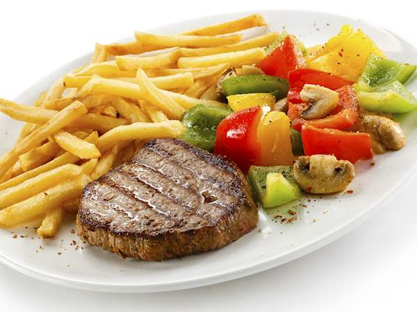

Ein Steak ist eine zum Kurzbraten oder Grillen geeignete Rindfleischscheibe. Steaks, die von anderen Tier- und Fleischarten stammen, tragen einen entsprechenden Hinweis in ihrer Bezeichnung Auch quer zur Wirbelsäule geschnittene Scheiben von größeren, festfleischigen Fischen wie Schwertfisch, Thunfisch, Hai oder Lachs werden als Steaks bezeichnet. Varianten Sirloin-Steak mit Pommes frites Filetsteak mit Pommes dauphine Nach deutscher Verkehrsauffassung sind die allgemein gehaltenen Begriffe Steak und Beefsteak identisch. Die Verwendung bestimmter Teilstücke ist nicht vorgeschrieben In Deutschland werden Beefsteaks häufig aus der Oberschale geschnitten. In Österreich hingegen wird der Begriff Beef-Steak fest definiert für ein Steak aus dem Rinderfilet verwendet. Deutsches Beefsteak ist die Bezeichnung für ein Hacksteak, das kein Steak im eigentlichen Sinne ist, sondern eine geformte Hackfleischmasse, die ähnlich zubereitet und in gegartem Zustand verzehrt wird.  Der Begriff Kluft wird in einigen Bereichen Norddeutschlands nicht für die gesamte Keule, sondern nur für die in der Keule liegende Oberschale verwendet. Dementsprechend werden in diesen Regionen Kluftsteaks hauptsächlich aus der Oberschale geschnitten. T-Bone- und Porterhouse-Steak werden lebensmittelrechtlich nicht voneinander abgegrenzt. Ein T-Bone-Steak darf unter der Bezeichnung Porterhouse-Steak angeboten werden und umgekehrt. Der Verbraucher erwartet beim Porterhouse-Steak jedoch einen größeren Filetanteil und eine insgesamt dickere Scheibe. Als Prime-Rib-Steak wird ein Steak aus der Hochrippe bezeichnet. Es wird meist am Stück im Ofen gegart und erst zum Servieren in Scheiben geteilt.Rindfleisch Ein Rindersteak kann prinzipiell aus jeder zum Kurzbraten geeigneten Muskelpartie des Rindes geschnitten werden. Es werden allerdings bevorzugt magere, bindegewebsarme Teilstücke verwendet. In der Regel enthalten Steaks keine Knochen. Ausnahmen sind: T-Bone-Steak, Porterhouse-Steak, Rib-Steak, zum Teil auch Club-Steak und amerikanische Zuschnittformen des Sirloin-Steaks Nicht für alle Steaks ist vorgeschrieben, aus welchem Teilstück sie geschnitten werden, vielmehr sind Begriffe wie Schlemmersteak, Barbecue-Steak, Grill-Steak, Ratsherren-Steak reine Phantasiebezeichnungen. Die meisten Steakzuschnitte sind jedoch lebensmittelrechtlich genau definiert, und ihre Bezeichnungen weisen eindeutig auf die Verwendung bestimmter Fleischstücke hin. Geeignete Teilstücke des Rindes sind: Filet Unterteilbar in die dünn auslaufende Filetspitze (Endstück), das hochwertige Mittelstück und den in der Keule liegenden, qualitativ nachstehenden Filetkopf. Hüfte Ein Teilstück aus der Keule, das sich in den Hüftzapfen, die schmale und die dicke Hüfte zerlegen lässt. Die beiden letzteren Teilstücke bilden die sogenannte Steakhüfte . Oberschale Ein weiteres Teilstück aus der Keule, unterteilbar in die (runde) Oberschale, die sich eher zum Schmoren, etwa für Rouladen eignet, und das kleinere seitlich ansitzende Eckstück , das eine bessere Eignung als Steakfleisch besitzt. Roastbeef Unterteilbar in das runde Roastbeef, das zungenförmig in die Hohe Rippe hineinragt , sowie das flache Roastbeef, das aus dem unteren Rückenbereich stammt. Das flache Roastbeef mit Rückenknochen und Filet bezeichnet man als Große Lende. Hochrippe Liegt zwischen dem sechsten und dem neunten Brustwirbel. Die ausgelöste Hochrippe besteht aus dem flachen Hochrippendeckel sowie dem runden Roastbeef, das den mageren Kern bzw. das Auge der Hochrippe bildet. Für Steaks können komplette Scheiben der Hochrippe oder nur der ausgelöste Kern verwendet werden. Ein bekanntes Steak ist das T-Bone-Steak, das aus dem Fleisch des Roastbeefs und des Filets besteht und zusätzlich einen namensgebenden T-förmigen Lendenwirbelknochen enthält. Diese Steaks schneidet der Fleischer in bis zu 700 Gramm schwere Scheiben. Ein Rinderfilet-Medaillon dagegen besteht aus dem Fleisch der Filetspitze oder des Filetmittelstücks und wiegt unter 150 g. Allgemein wird bei knochenlosen Steaks ein Zuschnitt von ca. 200 g pro Person empfohlen. Bei kleineren Zuschnitten zwei Stücke Fleisch pro Person benötigt. Knochenhaltige Steaks sind aufgrund ihrer nicht verzehrbaren Bestandteile schwerer. Üblicherweise beträgt die Scheibenstärke eines Steaks mindestens zwei Zentimeter